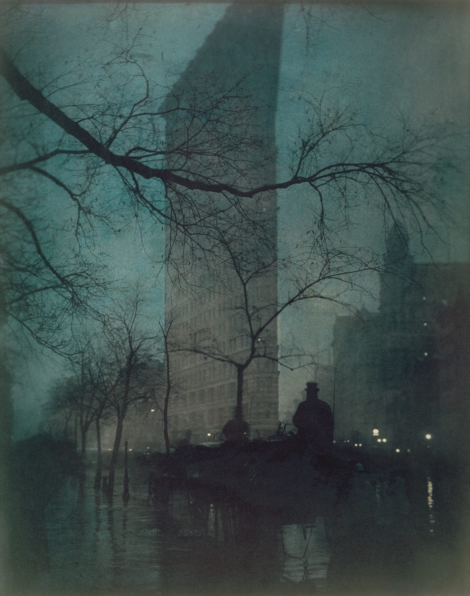

Plate 01
A building melting into dusk
A rainy evening, a carriage driver, and a tower that seems to dissolve into the air.
- Tone
- Blue-green twilight, printed in layers so the photograph reads almost like a painting.
- Framing
- A dark branch sweeps across the top, framing the tower and pulling us into the scene.
- Atmosphere
- Rain and mist soften every edge; small streetlights glimmer on the wet road.